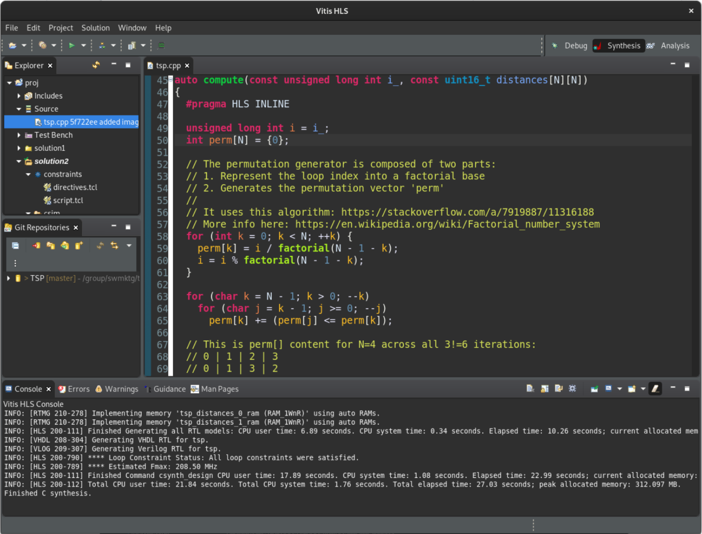

Vitis™ Hardware Acceleration TutorialsSee Vitis™ Development Environment on xilinx.com |
In this section…
We load the C++ traveling salesperson problem (TSP) design in Vitis HLS GUI.
Launching the Vitis HLS GUI¶
Open a terminal and navigate to the build directory, then launch the vitis_hls command (see below). It will open the graphical interface of Vitis HLS and configure the project based on the the content of hls.tcl (a Tcl file):
user@server:~$ cd ./build
user@server:~$ vitis_hls -p hls.tcl &
Once the tool comes up, on the left hand side, locate the Explorer pane and expand proj->Source. Then double click on tsp.cpp to inspect the source code.
The testbench is found just below in proj->TestBench in the file called tsp_TB.cpp.

The Tcl file we used as argument of the -p switch (vitis_hls -p hls.tcl) allowed the tool to simply read the setup and configuration options and skip the flow commands that would require the execution of simulation or synthesis.
Here is the content of the Tcl file (notice that how the tsp.cpp and its testbench tsp_TB.cpp are added to the project):
# Project setup
#
open_project -reset proj
set_top tsp
add_files ../code/tsp.cpp
add_files -tb ../code/tsp_TB.cpp
# Solution commands
#
open_solution "solution1" -flow_target vivado
set_part {xcvu9p-flga2104-2-i}
create_clock -period 3.0 -name default
set_clock_uncertainty 0.5
config_export -format ip_catalog -rtl verilog
# Main flow commands
#
csim_design
csynth_design
cosim_design
export_design -flow impl -rtl verilog -format syn_dcp
This accelerated tsp function receives distances as a series of integers computed outside of the function by the testbench.
Clik on the link below for an explanation of the design structure.